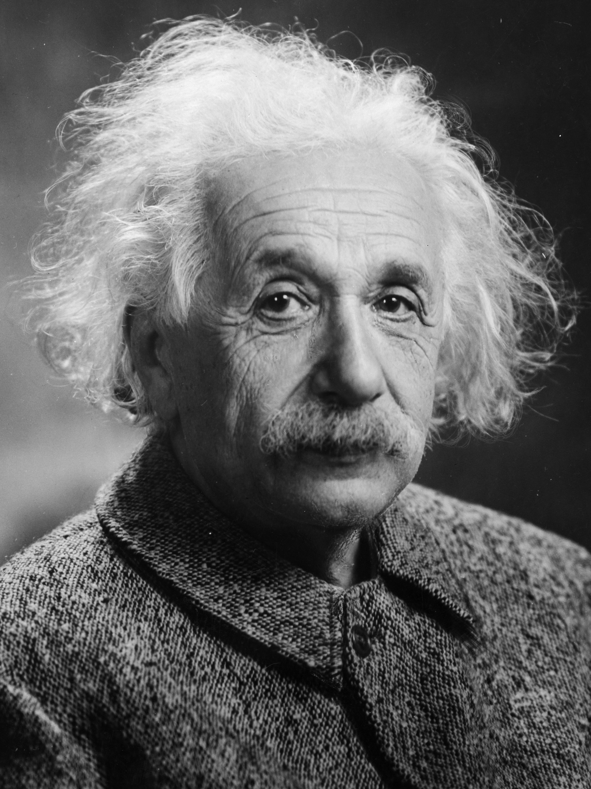
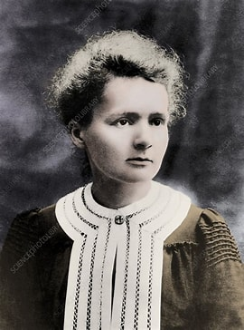

Discover the brilliant scientists who changed the world through their inventions, discoveries and research.

Born: 14 March 1879
Nationality: German
Occupation: Theoretical Physicist
Albert Einstein developed the Theory of Relativity and received the Nobel Prize in Physics in 1921. His work transformed modern science.

Born: 7 November 1867
Nationality: Polish-French
Occupation: Physicist & Chemist
Marie Curie pioneered research on radioactivity and became the first woman to win a Nobel Prize and the first person to win two Nobel Prizes.